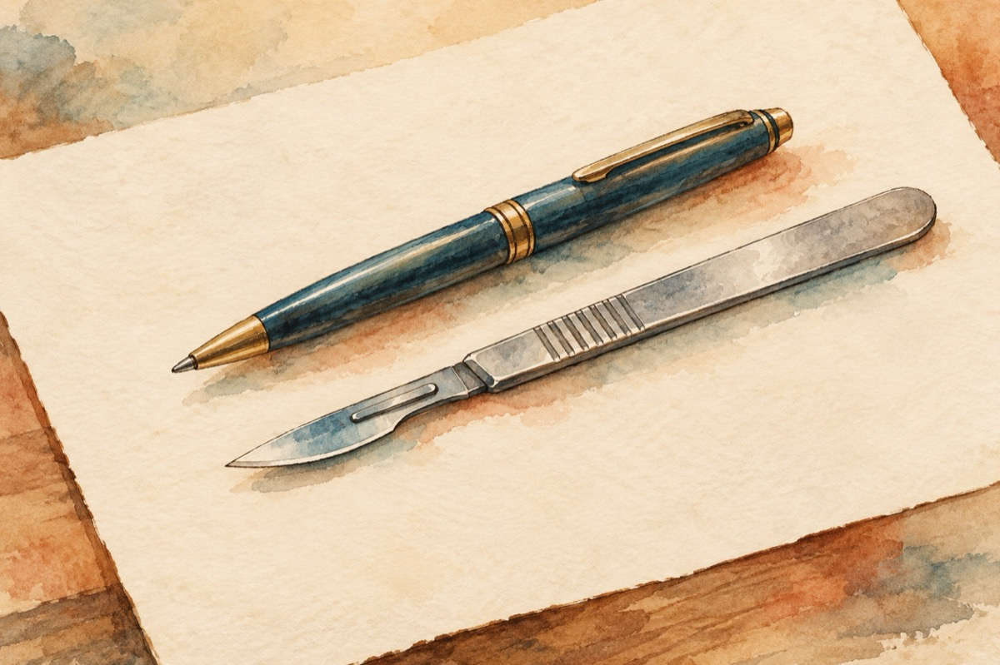

D-le doctor
Eu umblu cu pixu-n oameni
Și-i dau hârtiei ce știu
Cu toate că suntem semeni
Dumneavoastră, înăuntru îi lucrați din bisturiu!
Amândoi avem parafă
Și n-o punem orișicui
Se întâmplă câteodată
De ne-mpotmolim pe drum!
Doctorul e și poet
Lucrează cu fantezie
Atunci se simte complet
Când bolnavu-i sănătos, ca o rimă-n poezie!
Așadar doctor, poet,
Pot să lucreze-mpreună
Pentru om sunt un duet,
Pentru ritm la inimă și voie bună!
Vasile Groza